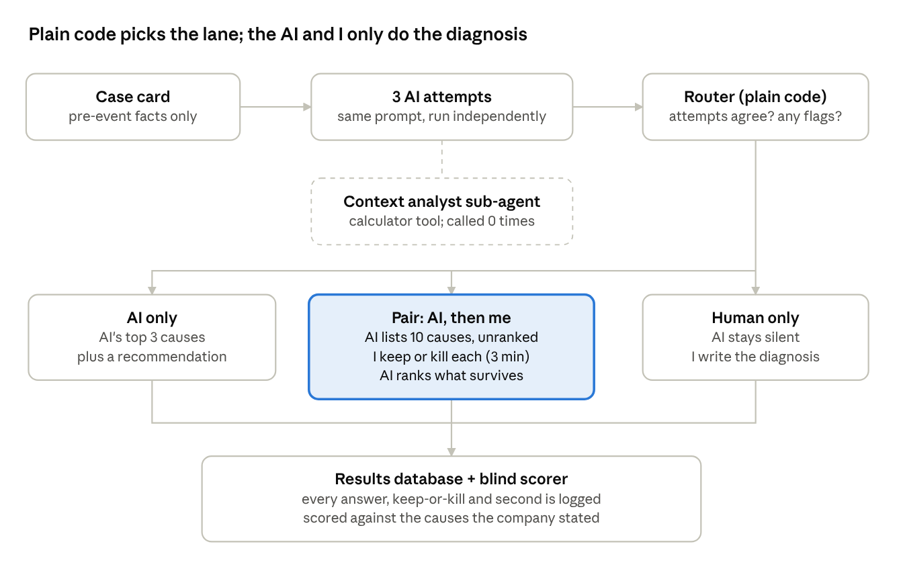
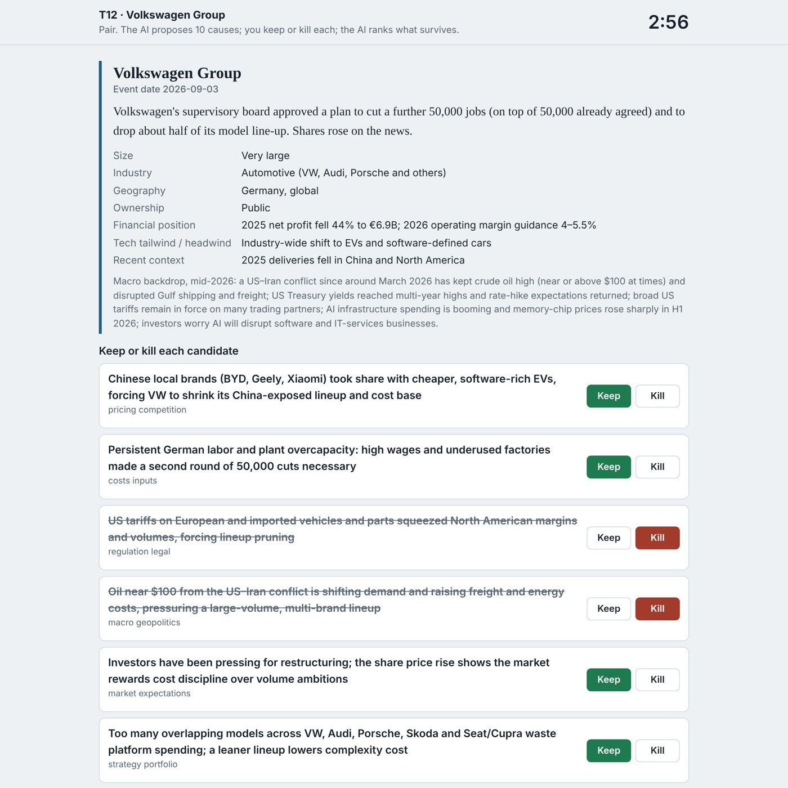
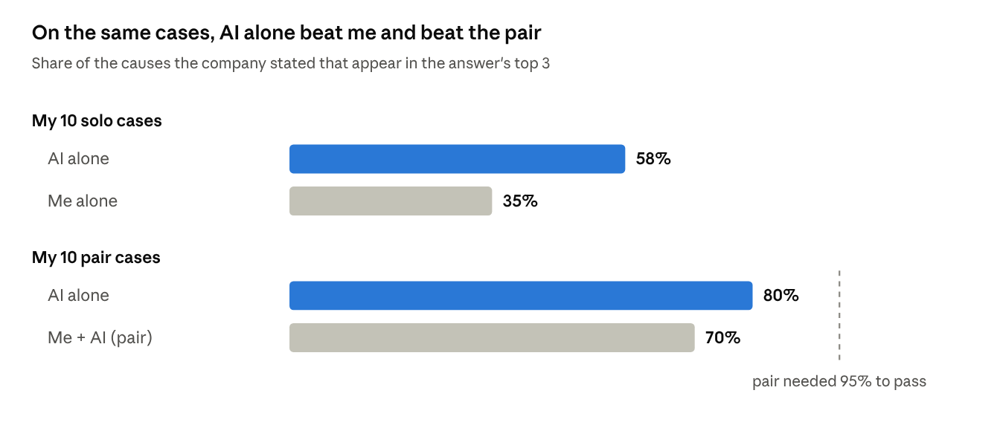
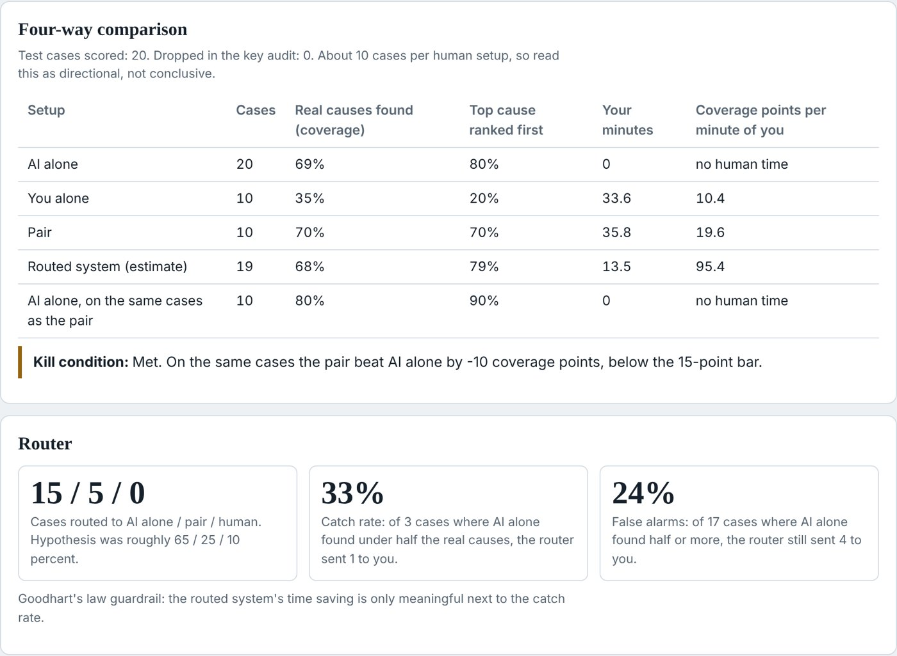

I tested whether my 3 minutes make an AI diagnosis better. Mostly, they didn't.
Summary
I wanted to know when an expert's time is worth adding to an AI's work. I tested it on a task I know from consulting: explaining why a real business event happened, such as a profit warning, a layoff or a share crash. I used 20 events from July to October 2026, after the AI's training data ends, and compared three setups: AI alone, me alone, and me plus AI.
The AI alone named 69% of the causes the companies later stated. I named 35% working alone. Together we named 70%, but on those same cases the AI alone named 80%. My three minutes of review made the answer worse. The router meant to send me only the hard cases missed both cases where I beat the AI. For this task, AI alone is the right default. The hard part is knowing when it isn't.
The problem
Much of my working life, first at Deloitte and now in go-to-market analytics, comes down to one question: why did this happen? A missed forecast, a lost account, a share price that fell 20% in a day. AI now writes a plausible first answer in seconds. What nobody measures is whether an expert reviewing that answer actually improves it, or just adds expensive comfort.
The course gave me a sharper way to ask it. Jason Wei's verifier's rule says tasks a machine can check will be solved by AI alone. A human and AI pair only adds value where the AI can generate many options and an expert can judge them faster than any machine. Diagnosis looked like exactly that kind of task. There are many plausible causes, no machine can verify them, and an expert reads between the lines by connecting the event to competitors, regulators, shareholders and the wider market.
AI drafts are cheap now, so the expert's minutes are the scarce input. My system had one job: decide, case by case, whether my minutes add anything, and prove it by comparing three setups on the same cases.
Hypothesis: AI handles most cases alone; on the hard ones, me plus AI beats either alone; and the system can tell which cases need me.
What I built
I built Diagnosis Lab, a web page that runs inside Claude. You give it a business event and a short context card of facts known before the event. Plain code then decides who works the case: the AI alone, the AI and me as a pair, or me alone.

In the pair lane, the AI lists 10 unranked candidate causes. I keep or kill each one and can add my own, all within three minutes. The AI then ranks only what survived and writes a recommendation. In the experiment, code assigned each case to a lane at random so the setups could be compared fairly. In everyday use, the router chooses and I can override it.
The stack is deliberately small: one model (Claude), five prompts, one optional sub-agent with a calculator tool, a small results database, and no multi-agent orchestration. The brief says complexity earns no credit, and I agree.
Five guardrails keep it honest. Case cards hold only facts known before the event. Every AI answer uses a fixed format and gets one retry before it is flagged. The AI may answer "not enough information" instead of guessing. Time saved is never reported without the router's catch rate, because of Goodhart's law. And the scorer never knows which setup wrote an answer.

How I built it: the decisions that mattered
The biggest decisions were about honesty, not code.
Choosing a task with an answer key
I dropped market sizing, because a machine can check it, so by the verifier's rule AI alone wins. I dropped predicting a company's next move, because several moves are usually reasonable. Diagnosis has a key: the cause the company or reputable press stated.
The dry run
The three-minute timer cut me off mid-thought, and causes I had typed but not yet added were silently lost. I added a one-minute overtime window that counts against me, and saved typed text automatically.
A fix three cases in
The AI ranker was quietly dropping causes I added, in two of three tries. From case four on, my additions always stayed in the final top three. Every run records which version of the rules it ran on.
Changing the scoring before seeing a score
I first planned to score three points for the top cause ranked first. Then I realised real events have several causes; Volkswagen stated four. I switched to coverage: the share of stated causes named in the top three.
Fixing the kill condition in advance
Before any score existed, I wrote down what would prove me wrong. The pair had to beat AI alone by 15 coverage points on the same cases, and beat me alone per minute of my time.
Why a test run by its builder still tells us something
The brief says the person tested should not be the builder. I broke that rule to meet the deadline, and I won't pretend otherwise. What I could do was design the test so that my conflicts of interest had no easy way in. There were three.
Conflict one: I might already know the answers
I never saw the answer keys before scoring. The events and their stated causes were collected for me, and I saw only titles naming the company, the event type and the month, such as "Videndum, profit warning, July". I confirmed I didn't already know why any of them happened. The stated causes sat in a separate database table that the page read only when scoring. And every event happened after June 2026, after the AI's training data ends, so neither of us could be remembering instead of diagnosing.
Conflict two: I might want the pair to win
I didn't choose which cases I did alone and which as a pair. Code randomly assigned each test case and mixed the order, so tiredness or practice couldn't favour one setup. I wrote the kill condition before any score existed. The scorer never saw which setup wrote an answer. And I re-checked five of its decisions by hand and agreed with all five.
Conflict three: I might tune the system on the test
I tuned only on three practice cases. Two rules changed mid-way. Both were logged with a version number, and both were made before any score was visible: protecting my added causes, and switching to coverage scoring.
The strongest evidence
The result went against my own hypothesis. If my bias had been steering it, the pair would have won. It lost to the AI alone.
What this design cannot fix
- One expert is one data point. The brief's own research found top-quartile workers beat the agent 74% of the time and bottom-quartile workers only 27%. The person matters, and I'm only one person.
- I knew which setup I was in. That can't be hidden, so my effort may have differed between the two.
- Twenty test runs, not the thirty the brief asks for. Read the direction, not the decimals.
- The case cards were written after the stated causes were collected. A fixed template limited hinting, but a blind card writer would be stricter.
I measured only myself, voluntarily, so the brief's rule against measuring a worker for a consequential decision isn't touched. The fix for every limit above is the same: a second practitioner on fresh cases.
Results
The pair failed its own test. On the same ten cases it scored 10 points below AI alone, where it needed to score 15 points above.

- AI alone: 69% of stated causes across all 20 cases, at zero minutes of my time.
- Me alone: 35% on my 10 cases, where the AI alone scored 58%. 34 minutes of my time.
- Me plus AI: 70% on my 10 pair cases, where the AI alone scored 80%. 36 minutes of my time.
- Per minute: the pair beat me working alone, 19.6 coverage points per minute against 10.4. That doesn't matter if the AI alone does better still.
Why the pair lost
Case by case, the pair tied the AI alone on 8 of 10 cases, lost 2 and won none, and both losses trace to my kills. The raw material was there: the AI's ten candidates contained a stated cause in 9 of 10 pair cases. On Videndum, the AI alone named 67% of the causes; after my review, the pair named 0%, because I had killed the freight-cost and production-disruption candidates. On Volkswagen, I killed US tariffs and coverage fell from 100% to 67%. None of the four causes I added myself matched a stated cause.
Where I beat the AI
Working alone, I beat the AI on two cases, tied one and lost seven. The two wins were Fluence Energy and Notion Mail: I scored 100% and the AI scored 0%. Both were new, AI-era situations. Fluence was a shift to a US supply chain; Notion Mail lost to users running their inboxes through AI agents instead of an email app.
The router
The router sent 15 cases to AI only, 5 to the pair and none to me alone. Its main signal never moved: the three AI attempts agreed on the top cause in 19 of 20 cases, including when they were wrong. It caught one of the three cases where the AI missed most causes, and it sent both of my wins to AI only.

The whole experiment cost about 120 AI calls on my existing Claude plan, with no extra spend, plus about 70 minutes of my time across the 20 test cases.
What I learned, and what comes next
The surprise was where my value sat. It wasn't broad business knowledge, which the AI already has. It was spotting new patterns the AI hasn't learned yet. Deleting the AI's ideas under time pressure destroyed more value than my additions created. In the brief's terms, keep-or-kill was the wrong channel: the smallest useful thing I could send the AI was a new cause, not a deletion. The brief's research makes the same point. The channel that worked carried a scored result, not an opinion, and a kill is an opinion.
What the evidence did to my assumptions:
- AI alone handles most diagnosis: confirmed.
- The pair beats AI alone: killed.
- I can kill wrong causes fast without killing right ones: killed. I killed a stated cause in 5 of 10 pair cases.
- When the AI attempts disagree, the AI is more likely wrong: killed. They almost never disagreed.
- A context-analyst sub-agent helps: killed. The AI never called it.
If the pair loses, what does the system become? An AI-first triage tool. The AI answers by default. I see only the cases the router flags as new territory, and I can add causes but not delete the AI's.
What would I build next?
- Let the expert add, never delete.
- Route on novelty, not disagreement: new technology, new business models, market shifts after the AI's training data. Those were my two wins.
- Give review more time, or fewer cases. I went into overtime on 16 of 20.
- Test a second expert who isn't me. The brief's research suggests the person moves the result more than the model.
- Package it so I can give it a company and an event, and it researches, builds the card, routes, and asks for my review only when it should. Then apply the same pattern to prioritising AI use cases for a specific company.
Other limits, for the record: the answer keys are stated causes, so a sharper read that the company never said out loud scores nothing. One case was hand-scored after the automatic scorer failed twice. Each pair case also produced a recommendation, which I did not score. And the first three test cases ran on the first version of the rules.
Team and roles
This was a solo project. I chose the problem and the task, wrote the consulting method the AI prompts use, set the router's rules, the scoring rules and the kill condition, ran all 23 cases (3 practice, 20 test), checked the scorer and interpreted the results. I built it the AI-native way the course teaches: Claude was my build partner in chat. It wrote the page's code to my design, collected the events and their stated causes, and helped me draft this write-up.
Resources and inspirations
- 100xEngineers Cohort 7: Siddhant Goswami's lectures on building agents, multi-agent systems (keep routing deterministic), and guardrails and evals
- Office Hours 9 and 10: falsifiable tests, labelling assumptions, then writing evals
- Jason Wei: asymmetry of verification and the verifier's rule
- Andrej Karpathy: on verifiability, and which tasks AI will solve alone
- The 100x Collaborative Intelligence capstone brief, including the CollabSkill and collective-search research it cites
@100xEngineers #0to100xEngineer